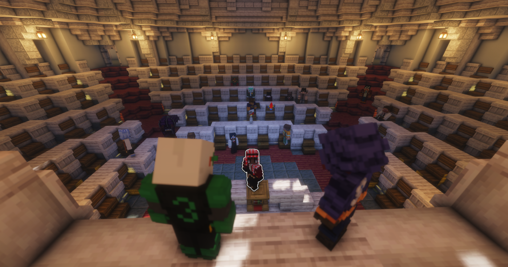

⚔️
Édition N°012 — Édition de guerre
Karminéa est en guerre contre Rinesthia

⚔️ Déclaration de guerreDiscours du président
« Nous sommes en guerre » : Karminéa se dresse contre Rinesthia
Accords rompus, victimes égrenées une à une, mea culpa présidentiel puis appel aux armes : devant le Conseil et les habitants réunis, Januk a prononcé le discours qui fait basculer Karminéa dans la guerre. « W KARMINÉA ! »
Pour comprendre le conflit
🚨 Édition N°011
Titou kidnappé : Januk avait bravé le Nether pour le ramener
Les négociations au pied de la forteresse, la libération de Titou, la disparition de Benzouz : les prémices du conflit.
Relire →🚨 Édition N°010
Les hommes en noir passent à l'attaque
L'assassinat de Mr. Jackson, le verrouillage du Nether et l'instauration du service militaire : le début de la crise.
Relire →🦜 Interview
Kiki & Koko : les plumes de la police de Karminéa
Aperçus au pupitre aux côtés du président pendant le discours, les deux perroquets restent fidèles au poste. Leur interview exclusive.
Lire →